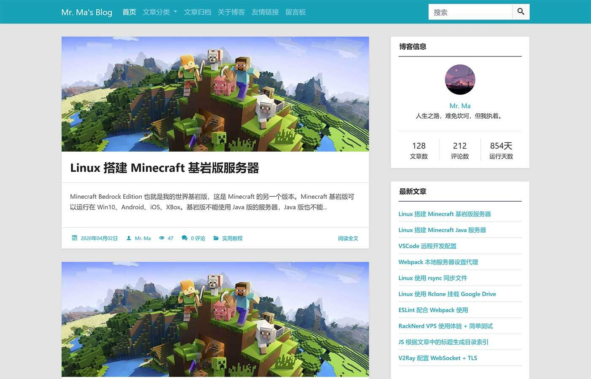
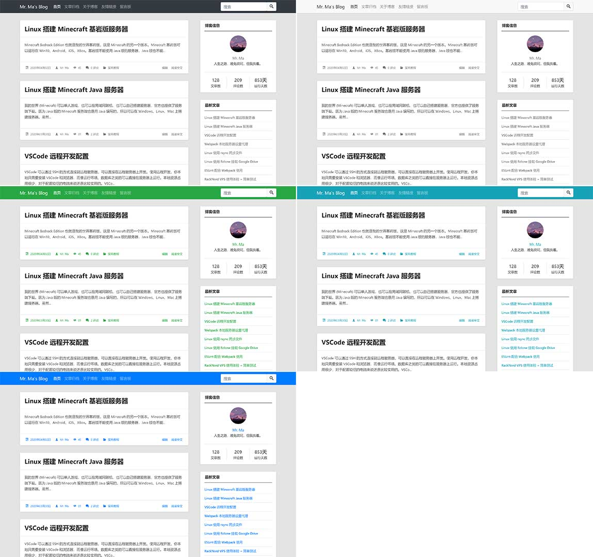
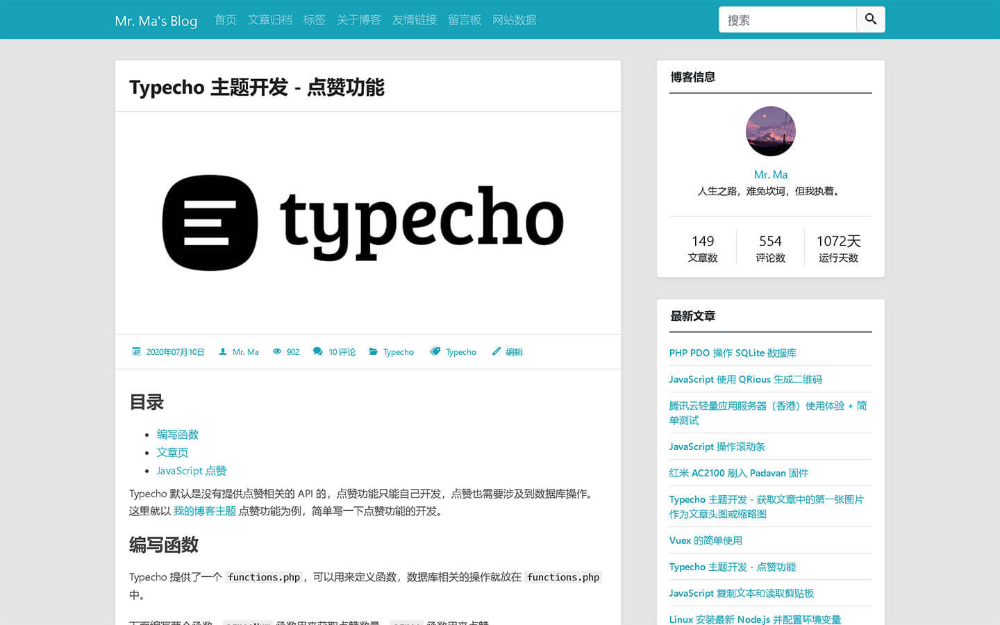
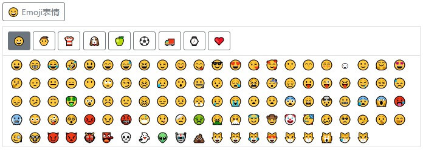

MWordStar 是一套简洁的 Typecho 双栏博客主题，也是 我的博客 之前使用的主题。主题免费开源，可以在 Github 上免费下载。
因为我现在暂时没有用这个主题，所以没有主题演示站，样式之类的可以参考下面的截图。
主题下载地址：https://github.com/changbin1997/MWordStar/releases
主题使用说明：https://mwordstar.misterma.com/
下面是主题首页截图：
主题元素包含圆角和直角两种风格，您可以根据喜好在主题外观设置中切换，下面是直角风格的首页截图：

主题还包含了几套不同风格的配色，您可以根据喜好在主题外观设置中切换。

文章页截图：

特点和功能
- 响应式设计
- 无障碍适配（Accessibility）
- 5 种不同风格的配色
- 两种不同风格的元素
- 代码高亮
- 丰富的设置选项
- 良好的 SEO 优化
- 自带点赞功能
- 文章可快速分享到社交网站
- 评论区自带 Emoji 表情面板
- 自动根据文章中的标题生成章节目录
- 长期维护
- 详细的 使用说明（必看）
主题介绍
外观设计
因为我个人比较喜欢两栏布局，所以这个主题也使用了两栏布局的设计。
主题依赖
主题主要用到了一下几个库和框架：
- Bootstrap 外观和布局
- jQuery Bootstrap 依赖
- jquery-qrcode 一个生成二维码的 jQuery 插件
- highlight.js 代码高亮
- IcoMoon 字体图标
其中 IcoMoon 的字体图标是可定制的，所以只包含了主题中出现的图标，字体图标的文件体积也很小。
主题的静态文件没有使用任何 CDN 地址，所有文件都放在主题的 assets 目录中。主题的生成目录、点赞、快速分享 之类的功能都是自己手动编写的，所以用到的 JS 库也比较少。
使用 Webpack 打包的版本前台只需要加载一个 CSS 和 一个 JS 文件，所有 JS 库都打包到了 JS 中，所有 CSS 和字体图标都打包到了 CSS 中。因为用到的库比较少，而且字体图标和部分组件都是按需引入的，所以打包后的 CSS 和 JS 也比较小。
主题安装
把主题上传到 Typecho 的 usr/themes/ 目录，然后解压，你也可以先解压在上传。
解压后需要保证 themes 目录下 有一个 MWordStar 目录。
登录 Typecho 的后台管理，进入 控制台 -> 外观，如果看到 MWordStar 就点击 启用。
代码高亮
代码高亮的样式使用的是 VS2015 的暗色主题，和 Visual Studio Code 的默认主题差不多。主题支持 30 多种语言的代码高亮。详细的说明可以查看 使用说明 。
友情链接
友情链接分为 全站友情链接、首页友情链接、内页友情链接。全站友情链接 会在每个页面的侧边栏显示，首页友情链接 会在首页的侧边栏显示，内页友情链接 只会在 友情链接 的页面显示。
如需查看友情链接的设置说明可以访问：使用说明 。
文章头图
文章头图可以在 首页、文章页、侧边栏 显示，您可以根据需求在主题外观设置中设置。文章头图来源支持自动获取文章的第一张图片和手动输入图片 URL。
无障碍（Accessibility）
上网对于大多数人来说是一件再简单不过的事，但是对于一些身体有缺陷的残障人士来说却是一件非常困难的事。
目前国内的很多网站都只注重外观，忽略了残障人士的可访问性。但是想要做好网站的用户体验，无障碍 适配肯定是少不了的。
主题针对屏幕阅读器做了大量优化，并 在 NVDA 和 VoiceOver 这两款屏幕阅读器上做过测试，无论是 PC 还是移动设备都能完美朗读。主题能准确传达需要朗读的内容和信息，对于盲人来说，使用标准的屏幕阅读器基本可以无障碍操作。
主题可完美支持键盘访问，颜色对比度也符合标准。
小提示：如果您是屏幕阅读器用户，为了您的浏览体验，不建议使用 IE 浏览器。
Emoji 表情
主题评论区包含一个 Emoji 表情面板，您可以在后台启用或禁用。Emoji 表情面板包含 1466 个表情，这些表情都是按照分类动态加载的，您不用担心性能问题。
Emoji 表情面板也进行了无障碍适配，可支持键盘访问和屏幕阅读器朗读。
下面是 Emoji 表情面板的截图：

兼容性
因为本主题使用了 HTML5 和 CSS3，需要 IE10 及以上浏览器才能完美兼容。IE8 及以下浏览器显示可能会出现一些问题。
插件适配
因为本人很少使用插件，所以目前适配的插件比较少。
下面是已适配的插件：
- Sticky 文章置顶插件
其它
主题 Github：https://github.com/changbin1997/MWordStar
码云仓库地址：https://gitee.com/changbin1997/MWordStar
主题使用 MIT License 开源。
如果您在使用这个主题时遇到 Bug 或有任何问题和建议都可以在 博客评论区 留言，也可以在 Github 的 issues 反馈。
最新回复